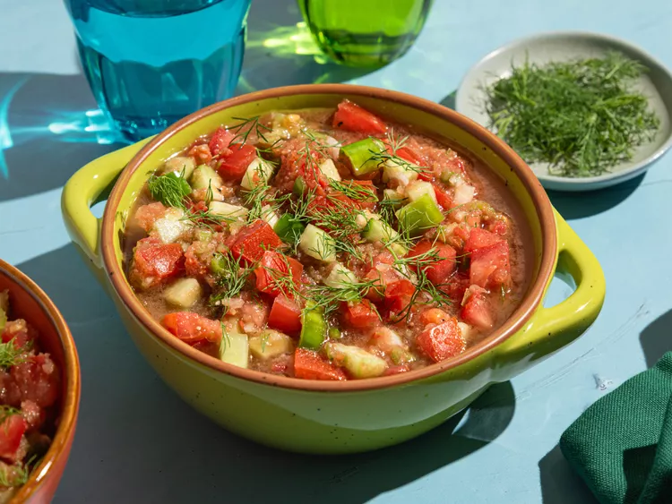

Dill Gazchapo

A fresh and mild gazpacho that takes advantage of
all that summer has to offer. Super easy too.
Garnish with a sprig of fresh dill and serve chilled.
Ingredients
- 6 medium ripe tomatoes, finely chopped
- 2 cucumbers, peeled and finely chopped
- 1 onion, finely chopped
- 1 green bell pepper, finely chopped
- jalapeno pepper, seeded and minced
- 1 large lemon, juiced
- 1 tablespoon balsamic vinegar
- 2 teaspoons olive oil
- 1 teaspoon kosher salt
- 1/2 teaspoon ground black pepper
- 1/4 cup chopped fresh dill
Steps
- Gather all ingredients.
- In a large bowl, stir together tomatoes, cucumber, onion, bell pepper,
and jalapeno pepper. Season with lemon juice,
balsamic vinegar, olive oil, salt and pepper.
- In a blender or food processor, puree half of the mixture until smooth.
- Return to bowl, stir in dill and mix well. Cover and chill for at least one hour before serving.
Home